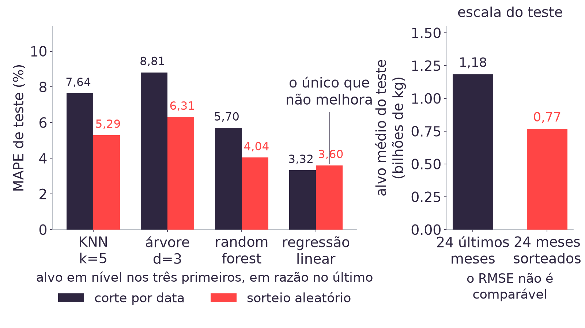
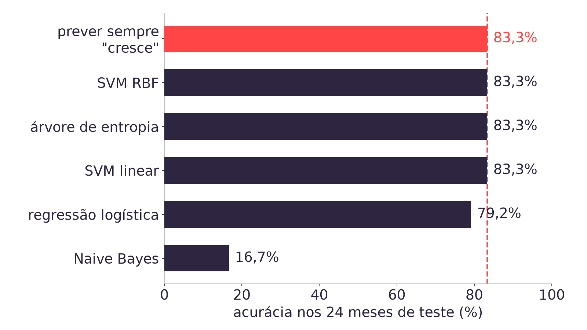
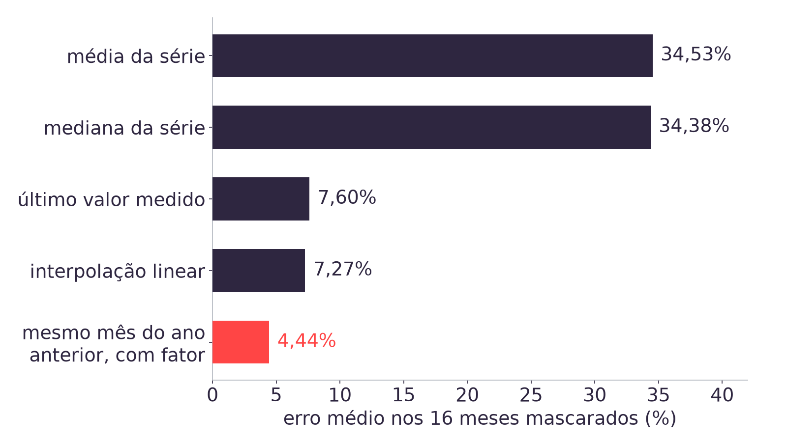

08h00 · 10h00
Autoestudo na Adalove, nove itens: desbalanceamento das classes, maldição de dimensionalidade, domain knowledge, PCA, Imputer e os casos Netflix e Airbnb [10].
10h00 · 10h15
Daily. O que fiz, o que vou fazer, impedimentos, com a abertura da Sprint 4, cujo planning é em 14/09.
10h15 · 12h00
Vazamento temporal (25 min), classificação e desbalanceamento (30 min), entropia (15 min), ausência e imputação (10 min) e a amarração com a ART.7 (15 min).
Dois dos nove autoestudos são de PCA, ensinado na Aula 08, em 10/09 [10].
corte = len(base) - 24 # 315
escalador = StandardScaler()
escalador.fit(X[:corte])
Ztr = escalador.transform(
X[:corte])
Zte = escalador.transform(
X[corte:])
pca = PCA().fit(Ztr)
pca.explained_variance_ratio_[0]
# 0.6821A Aula 08 deixou pronto o PCA das onze features do Modelo 1: PC1 com 68,21% da variância, quatro componentes com 96,07%, e o custo medido do corte, que leva o MAPE de 3,32% para 4,94% [11].
O trecho ao lado é o da Aula 08, sem alteração: o fit vê só as 315
primeiras linhas, e os 24 meses de teste passam apenas por
transform.
A Aula 08 mediu o que acontece ao ajustar escalador e PCA sobre as 339 linhas em vez das 315 de treino: PC1 sobe de 68,21% para 68,52% e o MAPE de quatro componentes cai de 4,94% para 4,91% [11].
O efeito é pequeno e vai sempre na direção otimista. Um erro que melhora a métrica não dispara alarme nenhum: ele é encontrado por disciplina de protocolo, não por leitura do resultado [3][6].
Pergunta disparada: o que aconteceria com o MAPE se separássemos treino e teste por sorteio aleatório nesta base?
# corte por data
corte = len(base) - 24
Xtr, Xte = X[:corte], X[corte:]
# sorteio aleatorio
from sklearn.model_selection \
import train_test_split
Xtr, Xte, ytr, yte = (
train_test_split(
X, y, test_size=24/339,
random_state=0))Vazamento é qualquer informação que chega ao treino e não estaria disponível no momento da previsão [6]. O sorteio aleatório produz exatamente isso numa série temporal: meses de 2025 ficam no treino enquanto meses de 2014 vão para o teste.
A LDC pede 24 meses à frente do último dado observado. O conjunto de teste que responde a essa pergunta são os 24 últimos meses, na ordem em que aconteceram [3].
| Medida sobre os 24 meses de teste | Corte por data | Sorteio |
|---|---|---|
| Alvo médio, em quilogramas | 1.181.946.133 | 765.719.266 |
| RMSE da regressão linear em nível | 40.695.433 | 35.028.744 |
| RMSE do KNN k=5 em nível | 104.945.482 | 48.382.751 |
O sorteio pega majoritariamente anos antigos, quando o abate era menor, e o RMSE em quilogramas cai junto [4]. Comparar RMSE entre os dois cortes mistura escala do período com habilidade do modelo, então a leitura do bloco usa MAPE, que é razão e não depende de escala.

Três modelos melhoram com o sorteio, e o quarto piora [2][4].
| Modelo, MAPE sobre 24 meses de teste | Corte por data | Sorteio |
|---|---|---|
| KNN k=5, alvo em nível | 7,64% | 5,29% |
Árvore de decisão max_depth=3 | 8,81% | 6,31% |
| Random Forest, 300 árvores | 5,70% | 4,04% |
| Regressão linear em razão, o fecho da Aula 07 | 3,32% | 3,60% |
O sorteio é a média de dez sementes [2]. Os três primeiros modelos preveem por vizinho, e o sorteio coloca um mês vizinho no treino de cada mês de teste. A regressão sobre a razão não guarda vizinho, então nela o sorteio só troca um teste recente por um teste espalhado, o que piora [4].
| Meses de teste com o mês anterior ou o seguinte no treino | Quantidade |
|---|---|
| Corte por data, teste de 2024-04 a 2026-03 | 1 de 24 |
| Sorteio aleatório, sementes 0 e 1 | 24 de 24 |
| Sorteio aleatório, média das dez sementes | acima de 95% |
É o mecanismo inteiro, contado mês a mês [4]. Prever fevereiro de 2014 tendo janeiro e março de 2014 no treino é interpolar entre dois pontos conhecidos, e a Aula 05 já mediu que interpolar é mais fácil que extrapolar. No corte por data só o primeiro mês do teste tem vizinho, porque ele encosta no fim do treino.
- Treinar
KNeighborsRegressor(n_neighbors=5)com corte por data e medir RMSE e MAPE nos 24 meses de teste. - Repetir com
train_test_split(X, y, test_size=24/339, random_state=0)e comparar as duas métricas: a diferença de RMSE é da mesma ordem da diferença de escala entre os dois testes? - Contar quantos meses de teste têm o mês anterior ou o seguinte dentro do treino, em cada corte, e conferir o 1 de 24 contra o 24 de 24 [2].
- Rodar a regressão linear sobre a razão nos dois cortes e explicar por que ela é a única que piora com o sorteio.
# cresce contra o mesmo mes
# do ano anterior
alvo = (base["abate_frangos"]
> base["lag12"]).astype(int)
alvo[:corte].mean() # 0.7810
alvo[corte:].mean() # 0.8333Os três modelos do TAPI preveem quantidade, e a ART.7 compara modelos de regressão. Matriz de confusão, precisão, revocação, Naive Bayes, regressão logística e SVM precisam de um alvo categórico, e dado sintético é proibido no acervo [3].
O alvo acima é o mais direto que as séries permitem, e existe para ensinar as métricas de classificação sobre dado real. É a primeira vez no acervo que um alvo não vem do TAPI [3].
| Conjunto | Meses de alta | Proporção |
|---|---|---|
| Base inteira, 339 meses | 266 | 78,5% |
| Treino, 315 meses | 246 | 78,1% |
| Teste, 24 meses | 20 | 83,3% |
O abate de frangos no Brasil cresceu em quase quatro de cada cinco meses medidos desde 1998, e o alvo herda essa característica do fenômeno [1][4]. Os autoestudos "Desbalanceamento das Classes" e "Formas de lidar com o desbalanceamento de Classes" tratam do assunto, e o alvo do case já é um caso dele [10].
| Métrica da baseline que prevê sempre a classe majoritária | Valor |
|---|---|
| Acurácia | 83,3%, 20 de 24 |
| Precisão da classe positiva | 0,833 |
| Revocação da classe positiva | 1,000 |
Precisão é a fração de acertos entre os meses que o modelo chamou de alta; revocação é a fração dos meses de alta reais que o modelo encontrou [5]. Um modelo que responde "alta" sempre encontra todas as altas, por construção, e por isso tem revocação 1,000 sem ter aprendido nada.

Três classificadores empatam com a baseline, um fica abaixo e um despenca [2][4].
| Classificador | Acurácia | Precisão | Revocação | F1 |
|---|---|---|---|---|
| Baseline majoritária | 83,3% | 0,833 | 1,000 | 0,909 |
| Regressão logística | 79,2% | 0,895 | 0,850 | 0,872 |
| SVM linear | 83,3% | 0,900 | 0,900 | 0,900 |
| SVM RBF | 83,3% | 0,833 | 1,000 | 0,909 |
Árvore de entropia max_depth=3 | 83,3% | 0,833 | 1,000 | 0,909 |
| Naive Bayes gaussiano | 16,7% | 0,000 | 0,000 | 0,000 |
SVM RBF e a árvore têm as quatro métricas iguais às da baseline porque preveem alta nos 24 meses [4]. A acurácia sozinha não distingue um modelo que decide de um que responde sempre a mesma coisa.
| Real / previsto | Previsto queda | Previsto alta |
|---|---|---|
| Queda real, 4 meses | 2 | 2 |
| Alta real, 20 meses | 3 | 17 |
A matriz mostra o que a acurácia esconde [5]. A logística prevê queda em cinco meses e acerta dois dos quatro meses de queda reais; o preço são três meses de alta classificados como queda, o que derruba a acurácia para 79,2%, abaixo da baseline. O SVM linear acerta os mesmos dois meses de queda errando uma alta a menos, e por isso fica em 83,3% [4].
Para a LDC, prever queda quando o mês sobe e prever alta quando o mês cai têm custos diferentes: um deixa ração parada em silo e o outro deixa cliente sem entrega.
O GaussianNB prevê queda nos 24 meses de teste: ele acerta os quatro meses
em que o abate caiu e erra os vinte em que subiu, terminando com precisão 0,000 e revocação
0,000 na classe positiva [4].
O modelo supõe que as features são independentes entre si dada a classe, e a Aula 08 mediu que 20 dos 55 pares dessas onze colunas passam de 0,9 de correlação absoluta [11]. A suposição do modelo está contradita pela própria base.
Pergunta para a sala: 16,7% de acurácia é o pior resultado possível nesta base?
- Montar o alvo binário
y > lag12e conferir os 246 positivos em 315 meses de treino [2]. - Medir a baseline majoritária com
accuracy_score,precision_scoreerecall_score, e guardar os três valores como referência. - Treinar os cinco classificadores nas onze features padronizadas e imprimir
confusion_matrixde cada um. - Apontar quais deles preveem a classe positiva nos 24 meses, e escrever em uma frase por que a acurácia deles empata com a de um modelo que não decide nada.
p = 246 / 315 # 0.7810
H = -(p * log2(p)
+ (1 - p) * log2(1 - p))
# 0.7584 bits
# nó puro (p = 1) -> 0 bits
# nó 50/50 (p = 0.5) -> 1 bitEntropia mede a incerteza de um nó em bits [7]. Um nó em que todos os meses são de alta vale 0 bits, e um nó meio a meio vale 1 bit. A raiz desta árvore, com 246 altas em 315 meses, vale 0,7584 bits.
O ganho de informação de um corte é a entropia da raiz menos a média das entropias dos dois filhos, ponderada pelo número de meses de cada lado. A árvore escolhe, em cada nó, o corte de maior ganho [5].
| Melhor corte de cada feature, sobre os 315 meses de treino | Ganho, em bits |
|---|---|
lag12 ≤ 737.169.694 | 0,0632 |
abate_suinos_lag1 | 0,0544 |
producao_ovos_lag1 | 0,0519 |
lag1 ≤ 655.298.371 | 0,0449 |
dias ≤ 28,5 | 0,0082 |
sen ≤ 0,6830 | 0,0043 |
O campeão ganha mais de catorze vezes o que sen ganha [4]. Saber o nível do
abate doze meses atrás informa mais sobre a alta do que saber em que ponto do ciclo anual
o mês está.
Corte candidato em dias | Divisão | Ganho |
|---|---|---|
dias ≤ 31 | 315 contra 0 | não há ganho a medir |
dias ≤ 30,5 | 131 contra 184 | 0,0032 bits |
dias ≤ 28,5 | 20 contra 295 | 0,0082 bits |
A coluna dias tem quatro valores no treino: 28, 29, 30 e 31 [4]. Um limiar
acima do máximo deixa todos os meses do mesmo lado, e um nó que não parte a amostra não
reduz incerteza nenhuma. Por isso a varredura de limiares só considera os pontos médios
entre valores distintos e consecutivos.
Nó da raiz, com criterion="entropy" | Meses | Entropia |
|---|---|---|
| Raiz | 315 | 0,7584 |
Filho da esquerda, lag12 ≤ 737.169.696 | 144 | 0,4374 |
| Filho da direita | 171 | 0,9123 |
A conta à mão e o DecisionTreeClassifier chegam ao mesmo corte, com dois
quilogramas de diferença no limiar [4][5]. O filho da esquerda reúne os meses de abate
mais baixo doze meses antes, e é o lado mais previsível: 0,4374 bits contra 0,9123 do
outro.
Pergunta para a sala: por que o lado de abate baixo há um ano é o lado mais fácil de prever?
| Medida sobre as cinco séries mensais | Valor |
|---|---|
| União dos períodos, de 1987-01 a 2026-03 | 471 meses |
| Interseção, de 1997-01 a 2026-03 | 351 meses |
| Períodos descartados pela junção interna | 120, ou 25,5% |
| Células vazias na matriz período por série | 480 de 2.355, ou 20,4% |
Nenhum dos dez CSVs versionados tem valor vazio [1][4]. A ausência real do acervo é de
período: producao_ovos começa dez anos antes das outras quatro séries, e a
junção interna joga fora esses dez anos de ovos para manter as cinco colunas
preenchidas.

Dezesseis meses de treino foram escondidos com semente 42, imputados por cinco estratégias e comparados com o valor real [2][4].
| Estratégia sobre os 16 meses mascarados | Erro médio |
|---|---|
Média da série, SimpleImputer(strategy="mean") | 34,53% |
| Mediana da série | 34,38% |
| Último valor medido | 7,60% |
| Interpolação linear entre vizinhos | 7,27% |
| Mesmo mês do ano anterior, com fator 1,05378 | 4,44% |
A série cresce por 28 anos, então qualquer estatística global do histórico descreve mal
um mês específico [4][8]. A estratégia que erra menos é a que usa a estrutura sazonal já
medida nas Aulas 04 a 08, e nenhuma delas vem de graça no SimpleImputer.
| Features na matriz padronizada | Distância média entre meses | KNN k=5 | Regressão |
|---|---|---|---|
2: lag1 e lag12 | 1,65 | 3,71% | 4,71% |
4: mais sen e cos | 2,65 | 4,59% | 4,73% |
7: mais lag2, lag3 e dias | 3,49 | 4,28% | 3,44% |
| 11: mais as quatro séries defasadas | 4,31 | 5,01% | 3,32% |
Cada coluna nova soma um termo positivo à distância euclidiana, e os vizinhos ficam todos mais longe: é a maldição de dimensionalidade do autoestudo da semana [10]. O KNN piora, porque decide por vizinhança e cada coluna afasta o vizinho mais perto. A regressão melhora, porque estima um coeficiente por coluna e não depende de proximidade [4].
Nenhuma decisão de feature deste acervo saiu de busca automática. Cada uma tem um motivo declarado, de domínio ou de medição [9]:
| Decisão | O que a motivou | Onde está registrada |
|---|---|---|
Alvo em razão sobre lag12 | o abate tem ciclo anual, e a árvore não extrapola tendência | Aula 07, ADR-010 |
| Granularidade mensal | o TAPI fala em abate mensal, e a classificação c12716 do SIDRA entrega mês | Aula 07, ADR-010 |
| Horizonte de 24 meses | é o que a LDC pediu no TAPI | PLANO_DE_ENSINO.md |
| Leite fora das entradas do Modelo 1 | H2 não rejeitada na primeira diferença, apesar de r = +0,96 em nível | Aulas 04 e 05 |
A última linha é a que mais ensina: o leite entrou como candidato por correlação alta em nível, saiu por hipótese declarada e confirmou a saída fora da amostra, piorando o MAPE de 1,60% para 1,89% na Aula 05. Os autoestudos de domain knowledge, Netflix e Airbnb trazem o mesmo movimento em outras empresas [10].
Exercício em dupla, cinco minutos: apontar um conhecimento de domínio da LDC que já mudou uma decisão de feature no projeto de vocês.
| O que foi medido | O que não se pode afirmar |
|---|---|
| Três modelos melhoram com sorteio nesta base | Que sorteio sempre infla a métrica: a regressão em razão piora, de 3,32% para 3,60% |
| A ordem das cinco estratégias de imputação, com semente 42 | O valor exato de cada estratégia em qualquer outro recorte |
| O KNN piora e a regressão melhora com 11 features | Que menos features é melhor: só a distância média cresce sempre |
O alvo binário existe para ensinar métrica de classificação sobre dado real. Os três modelos do TAPI seguem sendo de regressão, e a ART.7 compara modelos de regressão [3].
O KNN sai de 7,64% de MAPE com corte por data para 5,29% com sorteio aleatório. O que esses 5,29% medem?
A árvore de entropia acerta 83,3% dos 24 meses de teste. O que esse número autoriza a dizer sobre ela?
| Erro silencioso | Como ele aparece | O que a comparação exige |
|---|---|---|
| Vazamento temporal | MAPE melhor, de 7,64% para 5,29% | Corte por data em todo candidato |
| Métrica que não distingue | Acurácia de 83,3% em quem não decide | Baseline declarada e matriz de confusão |
| Imputação sem critério | 34,53% de erro no valor imputado | Estratégia medida contra valor conhecido |
ART.7 Comparação de modelos, peso 8, na Sprint 4, com planning em 14/09 e review em 25/09 [9]. Cada dupla entrega os candidatos do Modelo 1 comparados sob o mesmo protocolo: mesmo corte por data, mesma métrica sem dependência de escala, e a baseline da LDC como piso de comparação.
- IBGE. Pesquisa Trimestral do Abate de Animais e da produção de ovos e leite: tabelas 1092, 1093, 1094, 7524 e 1086 do SIDRA, classificação c12716.
- Números canônicos da aula em
.superpowers/sdd/2026-09-08-aula09/global-constraints.md. - Escopo e divisão dos 105 minutos em
docs/adrs/ADR-012. - As doze conclusões travadas em
tools/tests/test_problemas_aula09.pye no material de apoio. - Pedregosa, F. et al. Scikit-learn: Machine Learning in Python. JMLR, 2011.
- Kaufman, S. et al. Leakage in Data Mining: Formulation, Detection, and Avoidance. ACM TKDD, 6(4), 2012.
- Shannon, C. E. A Mathematical Theory of Communication. BSTJ, 27, 1948.
- Little, R. J. A.; Rubin, D. B. Statistical Analysis with Missing Data. 3a ed., Wiley, 2019.
PLANO_DE_ENSINO.md, seções 4 e 6: peso 8 da ART.7, planning em 14/09 e review em 25/09.- Autoestudos da Semana 07, com título exato em referencias/aula09.html.
- Aula 08 e seu material, de onde vêm os números do resgate.